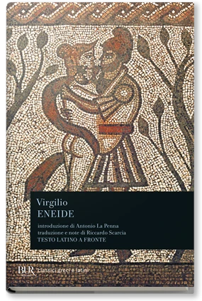
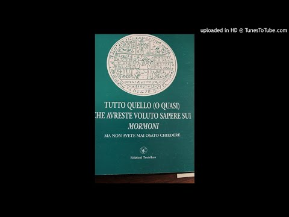
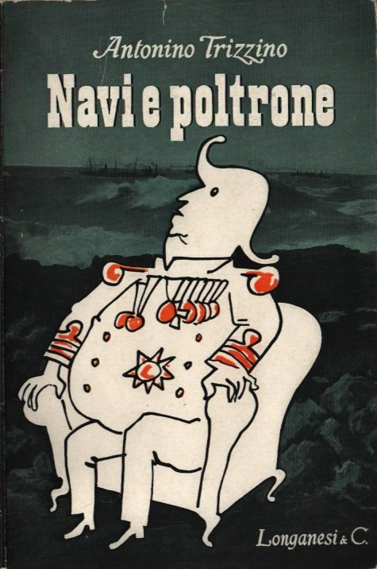
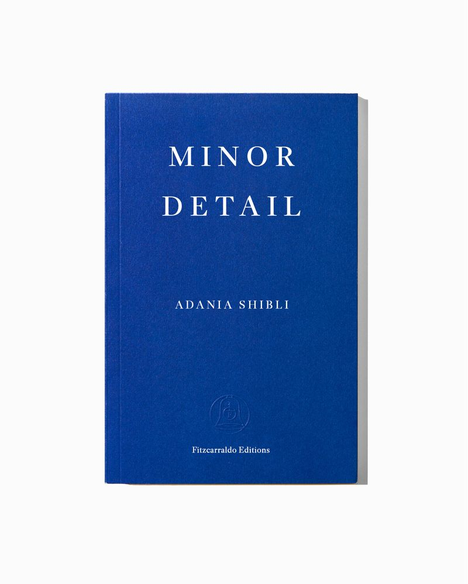

1:02:15 · 9 OPERE
Temi la controinformazione che disinforma.
Il filo del discorso
Dr Divago affronta il problema di una controinformazione che può riprodurre gli stessi errori attribuiti ai media tradizionali. La funzione didattica del canale e l’invito a correggere le proprie convinzioni introducono una riflessione su razionalità, prove e appartenenza. Una polemica sulle previsioni pandemiche passa poi a esempi cinematografici, alla discussione del conflitto in Medio Oriente e ai giudizi su commentatori italiani. La scheda mantiene attribuite le accuse e distingue l’analisi delle cause dalla legittimità di ogni risposta militare. L’11 settembre e la Terra piatta offrono casi di spiegazioni complottiste; sul WTC 7 la ricostruzione del relatore è confrontata con l’indagine NIST. Proverbi, Salmi, Iliade ed Eneide costituiscono un repertorio di immagini sull’ascolto, la pace, l’inganno e la misura. Il Libro di Mormon e il proprio libro sui mormoni introducono una digressione sulla credulità. Una rassegna di sorprese militari, con Navi e poltrone di Trizzino, contesta l’equivalenza fra essere colti impreparati ed essere complici. La parte finale polemizza con Adania Shibli e il romanzo probabilmente identificabile con Un dettaglio minore: i riscontri distinguono la pubblicazione precedente al 2023, il premio e la mancata cerimonia a Francoforte. La conclusione torna alla necessità di verificare argomenti e generalizzazioni anche quando provengono da voci considerate alternative.
I libri nel discorso

Proverbi
Identificazione probabile
Copertina della Bibbia che contiene Proverbi: San Paolo, 2014 · Nuova Versione dai Testi Antichi · edizione di riferimento
Copertina dell’intera Bibbia. Non rappresenta un’edizione autonoma dei Proverbi e non identifica l’edizione citata nel video.
Sapienza che grida nelle strade: allusione a Proverbi 1,20–21; titolo e versetto non pronunciati.
Passaggio 9:39 ↗ · Fonti e libro ↗Salmi
Copertina della Bibbia che contiene i Salmi: San Paolo, La Bibbia. Nuova Versione dai Testi Antichi, settembre 2014, 1320 pagine, ISBN 9788821593246. Immagine dell’intero volume che contiene i Salmi.
Copertina della Bibbia, raccolta che comprende i Salmi. Non è un volume autonomo del Salterio e non identifica la traduzione o l’esemplare adoperati dal relatore.
Salmi espliciti e invito alla pace di Gerusalemme, compatibile con 122,6; numero non pronunciato.
Passaggio 19:28 ↗ · Fonti e libro ↗
La società del contrario
Copertina: Zambon · 2005
Copertina autentica dell’edizione di riferimento, controllata visivamente. Non identifica l’esemplare letto o citato nel video.
Titolo La società del contrario esplicito nel riferimento al proprio libro.
Passaggio 20:51 ↗ · Fonti e libro ↗
Eneide
Identificazione probabile
Copertina: BUR, 11 settembre 2002, introduzione Antonio La Penna, traduzione e note Riccardo Scarcia, testo latino a fronte, 1168 pagine; ISBN 9788817117418.
Immagine autentica dell’opera, controllata visivamente; l’edizione di riferimento non è attribuita al filmato.
Laocoonte e frase Timeo Danaos et dona ferentis, Eneide II,49. Virgilio e titolo non pronunciati; il racconto del cavallo è accostato oralmente all’Iliade.
Passaggio 38:25 ↗ · Fonti e libro ↗
Iliade
Copertina: Einaudi · ET Classici · 2014
Copertina autentica dell’edizione di riferimento, controllata visivamente. Non identifica l’esemplare letto o citato nel video.
Iliade esplicita come mito fondativo greco. La caduta di Troia attraverso il cavallo non è narrata nell’Iliade.
Passaggio 39:03 ↗ · Fonti e libro ↗
Libro di Mormon
Copertina: Church Distribution · edizione italiana di riferimento
Copertina reale di riferimento; l’edizione non è identificata come quella citata nel video.
Libro di Mormon esplicito nella discussione della predicazione mormone.
Passaggio 43:33 ↗ · Fonti e libro ↗
Tutto quello (o quasi) che avreste voluto sapere sui mormoni, ma non avete mai osato chiedere
Copertina: Edizioni Teotokos · copertina fotografata nel video dell’autore
Fotografia della copertina nella miniatura originale del video «I mormoni e la mentalità settaria», conservata intera. Anno e ISBN della copia fotografata non sono verificabili; resta la divergenza 1992/1993 documentata nella voce.
Il relatore richiama il titolo del proprio libro sui mormoni, riconoscibile benché la resa nella trascrizione automatica sia corrotta.
Passaggio 45:39 ↗ · Fonti e libro ↗
Navi e poltrone
Sovraccoperta di un esemplare Longanesi: Fotografia di un esemplare Longanesi con sovraccoperta illustrata. Il libraio lo cataloga 1952; non è stata verificata la data sul suo frontespizio.
Titolo, nome Antonino e marchio Longanesi leggibili nella fotografia; il nome Antonio nella scheda del libraio è un refuso, corretto mediante catalogo e immagine. Il record Braidense consultato descrive un’altra edizione, ©1966 stampa 1968, con sentenza in appendice: non si sovrappongono le due edizioni. Non viene certificata qui una data di prima stampa o l’esemplare del video.
Trizzino e Navi e poltrone espliciti nella rassegna degli attacchi a sorpresa.
Passaggio 49:01 ↗ · Fonti e libro ↗
Un dettaglio minore
Identificazione probabile
Copertina inglese di Minor Detail, lo stesso romanzo: Immagine editoriale corrente di Minor Detail, edizione inglese Fitzcarraldo, traduzione Elisabeth Jaquette. Il catalogo data la pubblicazione al 6 maggio 2020; la grafica corrente non è attribuita a quella prima tiratura.
Copertina inglese autentica della stessa opera. Titolo italiano ed edizione La nave di Teseo 2021, traduzione Monica Ruocco, ISBN 9788834606162, sono riscontrati nel curriculum della traduttrice. L’immagine non riproduce l’edizione italiana né identifica il volume del video.
Adania Shibli esplicita; trama ambientata nel 1949 e premio letterario corrispondenti a Un dettaglio minore. Titolo non pronunciato.
Passaggio 56:53 ↗ · Fonti e libro ↗